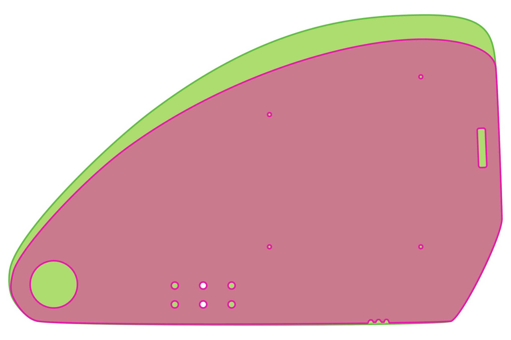
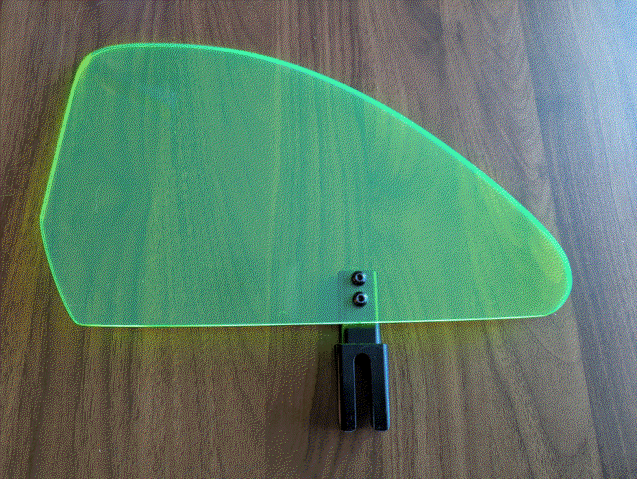
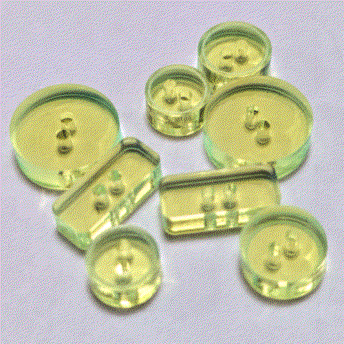

Making Custom Wheelchair Side Guards
This is not a super sound idea, repeat on your on judgement.
One day, you may find yourself in a fitting for a manual wheelchair. During this fitting, the tech will likely ask you if you want arm rests. Arm rests seam reasonable, you may think. All the comfiest chairs have arm rests, won't I want arm rests on this chair? Reader, you probably do not want the arm rests.
And, yes, I could have just bought some normal side guards, but I am generally disinclined to pay the increased price associated with "medical equipment" on principle whenever I can. There is absolutely no reason that a flat metal or fiberglass shape with some screw holes through it should cost, at minimum, $120. Thankfully, I was able to repurpose the mounting clamp and pin from my original arm rests, so I just needed something flat, in the right shape, with some through-holes to attach it.
So, I made my own. I wanted them to be:
- Able to protect my clothes/person from the dirt on the wheels
- Ideally, cheaper than the ones from a medical supply
- Fun, colorful, mine
I decided to have them laser cut out of an acrylic sheets. I knew they would likely eventually crack (which they did, more on this later), but I wanted to see if it would work (it did).
Using images of side guards for my chair and mounting clasp, I used a vector program to make an .svg to send to a laser cutting service.
Version 1
These were the first version I had made. They fit very nicely on a 19"x22" acrylic sheet. I had originally intended on using the rectangle-y hole to attack the side guard to my back rest, but this ended up not allowing me to fold the back rest down (an obvious problem that did not occur to me until after I'd zip tied it together).
I had them cut from 1/8" fluorescent pink acrylic.
Version 2
As mentioned earlier, the side guards did end up cracking, but lasted for about two years (I ordered the first version in June of 2024 according to my emails). They still (in June of 2026) technically "work", but are relying on packing tape to keep cracks from spreading.
Comparison to Version 1
Improvements I made from version 1 to version two:
- choose a thicker acrylic sheet (1/4" fluorescent green this time)
- removed the unnecessary through-holes
- made the top a little higher
Here's an overlay of the two versions:

Update: June 22
They're here, I love them.

From the extra room on the acrylic sheet, I had very impractical buttons cut.
